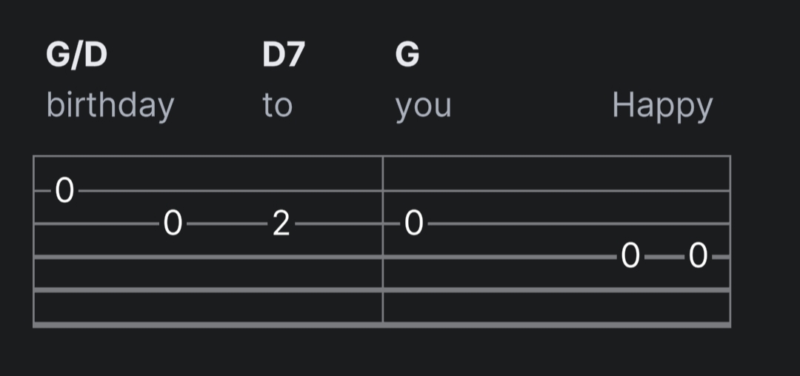
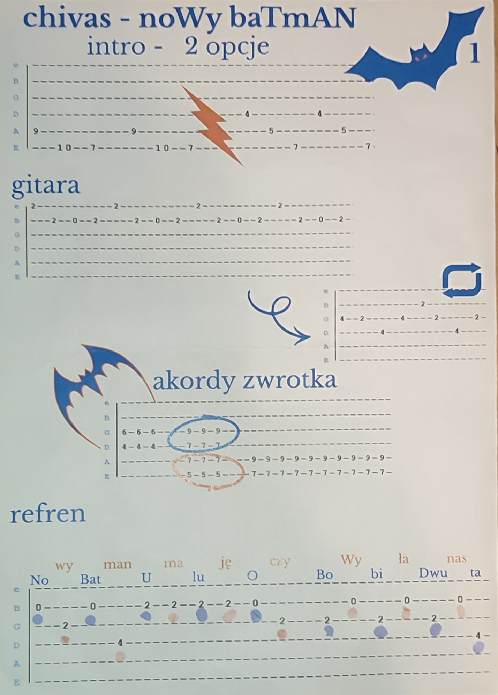
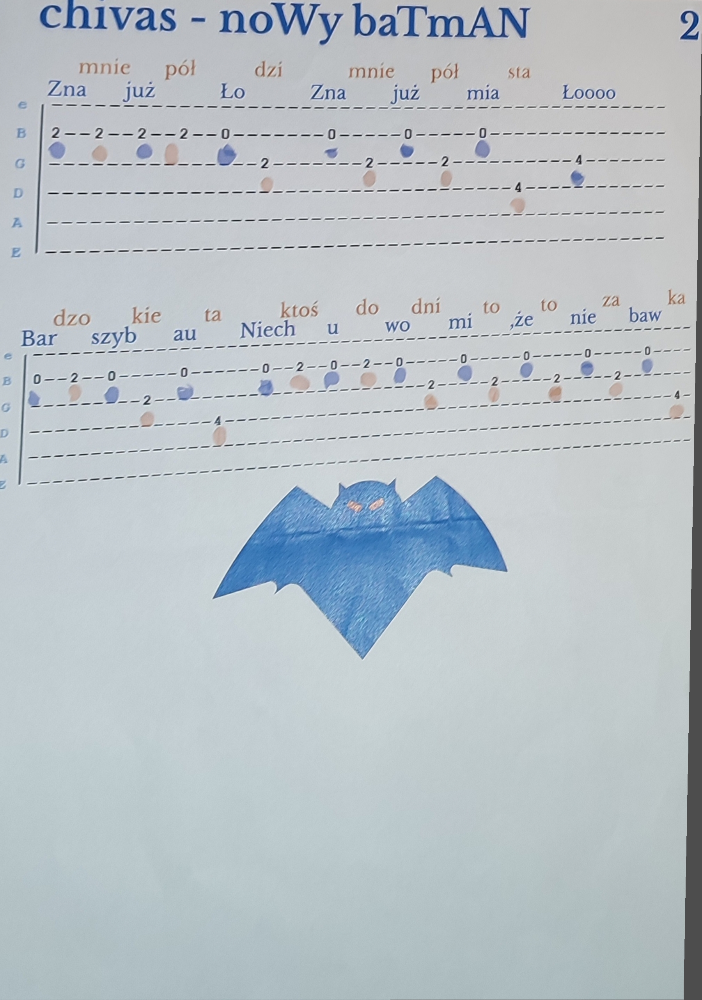
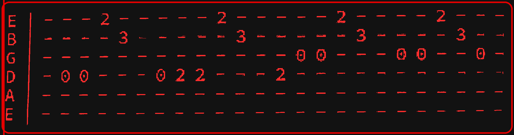

GUITAR WORLD

ROCK • METAL • GUITAR
ROCK • METAL • GUITAR
Witaj w miejscu, gdzie królują gitary, rock i metal! Znajdziesz tutaj gitarowe riffy oraz tabulatury, dzięki którym możesz poznawać nowe utwory i uczyć się grać.
Strona jest przeznaczona dla początkujących gitarzystów, osób uczących się gry na gitarze oraz fanów rocka i metalu.
Chwyć gitarę i zaczynamy!
Wpisz nazwę utworu, którego szukasz!
Zacznij wpisywać nazwę utworu.
Wyświetlasz wszystkie riffy i tabulatury.
Twoje miejsce do nauki utworów!
Strojenie klasyczne: E A D G B E
POZIOM TRUDNOŚCI: ŁATWY
Tabulatura – część 1

Tabulatura – część 2

Strojenie klasyczne: E A D G B E
ŁATWY / ŚREDNI
Tabulatura – część 1

Tabulatura – część 2

Strojenie: E A D G B E (standardowe)
TRUDNY / ŚREDNI

Strojenie klasyczne: E A D G B E
POZIOM TRUDNOŚCI: TRUDNY
Tabulatura – Master of Puppets

Najlepsze gitarowe riffy.
Strojenie klasyczne: E A D G B E
POZIOM TRUDNOŚCI: ŁATWY
E|------------------------------| B|------------------------------| G|-0-3-5-0-3-6-5-0-3-5-3-0------| D|------------------------------| A|------------------------------| E|------------------------------|
Strojenie: E A D G B E (standardowe)
POZIOM TRUDNOŚCI: ŚREDNI
E|----------------------------- B|----------------------------- G|----------------------------- D|---5------------------------- A|--7--------7----------------- E|-0----6-5--------------------
Strojenie klasyczne: E A D G B E
POZIOM TRUDNOŚCI: ŚREDNI

Strojenie klasyczne: E A D G B E
POZIOM TRUDNOŚCI: ŁATWY

Poznaj podstawowe chwyty gitarowe. Wybierz akord, sprawdź diagram i ułóż palce na odpowiednich progach.
Nasłuchuj struny i sprawdź, czy jest prawidłowo nastrojona!
Częstotliwość: -- Hz
Kliknij START, aby rozpocząć
Ustaw gitarę blisko mikrofonu, uderzaj w jedną strunę naraz i poczekaj na odczyt. Zielony kolor oznacza, że dźwięk jest nastrojony. Stroik rozpoznaje dźwięki w standardowym zakresie gitary.
Ustaw tempo i ćwicz równo w rytmie 4/4.
Metronom jest wyłączony.
Pierwsze uderzenie w takcie jest mocniejsze, kolejne trzy cichsze.
Mierz czas poświęcony na naukę riffów, tabulatur i gry na gitarze. Włącz licznik, kiedy zaczynasz ćwiczyć!
Licznik jest zatrzymany.
Łączny czas jest zapisywany w przeglądarce i pozostaje zachowany po odświeżeniu strony. Reset sesji nie usuwa łącznego czasu ćwiczeń.
Zapisuj pomysły na riffy, własne tabulatury, ćwiczenia, postępy i wszystko, co chcesz zachować na później.
Nie masz jeszcze żadnych notatek. Dodaj pierwszą powyżej!
Podejmij wyzwanie, ćwicz gitarę i zdobywaj kolejne osiągnięcia!
Kliknij przycisk i wylosuj swoje zadanie!
Przećwicz zmianę między dwoma prostymi akordami przez 5 minut.
Zagraj prosty riff powoli i postaraj się zachować równy rytm.
Przećwicz kostkowanie naprzemienne przez kilka minut.
Zagraj wybrany riff trzy razy z rzędu bez zatrzymywania.
Przećwicz trudniejszy fragment utworu, pilnując dokładności i rytmu.
Spróbuj zagrać cały wybrany utwór od początku do końca.
Wykonane wyzwania: 0 / 6